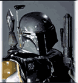

Forums galactiques > Assemblée Galactique : diplomatie officielle > Agarash le damné
Pages : 1 2
| Ariétan Respect diplomatique : 544  04/11 ETU 16:35  | Score : 0 Détails Commandants, Commandantes...
Je viens dénoncer officiellement le comportement inadmissible du commandant Agarash le damné. Je vous explique. Il y a de cela quelques jours le Capitaine Pain, à qui j'ai fais découvrir la galaxie, s'installe au sein du système 237 en PC5. Agarash le damné se présente alors, hors lors d'un malentendu, Agarash le damné et le Capitaine Pain ont attaqué simultanément la même planète (neutre a ce moment là) Agarash le damné a eu la planète quelques minutes avant que l'autre attaque surviennen. Ce qui l'a donc conduit a recevoir un rapport indiquant que le Capitaine Pain l'a attaqué. Suite à cela il contre attaque le Capitaine Pain (et jusque là a la limite je le comprend, bien que prendre contact avec lui avant aurai été moins "préhistorique" comme opération") Suite à cela j'ai pris contact avec Agarash le damné lui demandant des explications, missive diplomatique restée sans réponse... Les offensives envers le Capitaine Pain se poursuivait, j'envoi une deuxième missive diplomatique mettant en demeure de cesser les attaques. Le Capitaine Pain envoi alors un enorme communiqué diplomatique dans lequel il s'excuse en long en large et en travers et dans lequel il s'agenouille lmimite pour demander pardon (alors qu'il n'y a pas lieu). Suite à cela je suis contacté par Phaï Tang avec qui j'ai eu une conversation tout a fais cordiale et diplomatique, nous avons compris que cela est parti d'un malentendu et d'une attaque simultané de la même planète. Suite a cela je décide de maintenir mes croiseurs lourd Ioniques au sein du PC5 afin d'assurer la dissuasion, en aucun cas ils n'ont fais feu à un quelconque moment. Agarash le damné, malgré toute les missives diplomatique, ainsi que les efforts fait par moi même, par Phaï Tang ainsi que par le Capitaine Pain qui lui a carrément proposé de lui laisser le point de coordonée à cotèsde celui qu'il controlais a ce moment là, de se partager le point de coordonée 1 et que Pain garde le point de coordonée 5 (pour info il possède 3 planète sur 4 au pc5...) Celui-ci ne fait aucun effort et poursuis ces attaques acharnées. J'informe donc officiellement que le Capitaine Pain découvrant la galaxie et en étant plus dégouté qu'autre chose suite à ce comportement est extrêmement affaibli et que je le défendrais jusqu'a la mort, étant donné que même mes croiseurs ont été détruit par d'autres commandants.... Ce n'est point avec de tels comportement que nous aurons un espace convivial..... D'autre part je souhaite avoir une explication sur la destruction barbare de mes flottes. Je ne suis officiellement en guerre contre personne et je souhaite que cela soit compris et que l'on n'attaque pas mes troupes tant qu'elles n'ont eu aucun comportement hostile. (HRP : Franchement c'est abusé, c'est un petit jeune qui s'éclate et a qui j'ai fais découvrir apo, il n'a même pas le temps de se développer qu'il est déja exterminé...) | ||
| Imothep Respect diplomatique : 571  04/11 ETU 17:09 | Score : 0 Détails Regardant Ariétan s'exprimer, Imothep pensa :
"Si le Tribunal Galactique que nous proposons était mis en place, ce genre d'agressions de petits commandants seraient punie, à moins d'une restitution et d'une retour au calme." | ||
| Morcar Baughlir Respect diplomatique : 0  04/11 ETU 17:11 | Score : 0 Détails Je suis parfaitement d'accord avec Imothep. Il est important de creer un institution de ce genre pour regler de pareilles situations, sans quoi les choses risques de dégénérés dans un cercle vicieux de violence.
| ||
| Capitaine Pain Respect diplomatique : 0 04/11 ETU 19:03 | Score : 0 Détails Le Capitaine Pain se leva.
Désolé messieurs de l'assemblée mais lorsque l'on reçoit ce genre de message cela ne donne guère envie de poursuivre.... Expéditeur Agarash le damné Destinataire Capitaine Pain Date d'envoi 4/11 ETU 18:16 Sujet Re: comme ca et pas autrement Message mais commandant vous perder votre sang froid,jai comemncer comme vous , sinon je n'orais pas debuter dans se systeme , de plus avec votre nom , votre age , et votre nobiliter vous serier pas aller loin aller pti noob je t'offre ton cerceuil , je ve pouvoir me faire des tartine. //soupir | ||
| Djil Respect diplomatique : 211  04/11 ETU 19:10 | Score : 0 Détails c'est innadmissible...
tout bonnement inadmissible... comment peut on rester la sans rien faire face a une telle preuve de folie ?? j'espere que vous prenez les mesures appropriées chers confreres car ce genre de manigance doit etre puni au centuple .... en vous laissant agir en conséquence.... | ||
| Commandant Kerstan Respect diplomatique : 126  04/11 ETU 19:10 | Score : 0 Détails Le commandant Kerstan, plutot dégouté par les messages retranscrit, prit la parole :
"Commandant Pain, je vous conseille de dévolpper au plus vite l'Hyperfusion, si ce n'est déjà fait. Cela permettra à d'autres commandants de venir dans votre système pour vous aider. Quant à Agarash, je peux savoir pouquoi vous vous mettez à menacer vos voisins ? Je sais que vous n'êtes pas du genre pacifiste, mais je pensais que vous n'étiez pas non plus du genre à faire la guerre juste parceque ça vous chante ! Et ne vous inquitez pas commandant Djil, si cela s'avère vrai, j'en prendrais note, et agirais en conséquence..." | ||
| Djil Respect diplomatique : 211 04/11 ETU 19:15 | Score : 0 Détails Agarash possede déja l'hyperfusion donc je vous invite a remettre a la place qui lui est due ce petit rat qui ne sait que détruire, détruire, détruire...
je crois que vos jours sont comptés, Agarash... en vous laissant savourer les magnifiques instants qui se situent avant le trépas et le voyage vers l'autre monde, je vous laisse, seul et abandonné, contre ceux qui veulent que la justice regne... | ||
| Capitaine Pain Respect diplomatique : 0 04/11 ETU 19:23 | Score : 0 Détails Je vois défiler plein de message de soutiens, apparement il y a plus d'un millier de croiseurs lourd amiraux qui se dirige vers le 237, sans compter les ioniques et les hyperatomique, je suis surpris car je connais rien a ces technologie.
désolé de créer autant de problème envers tout le monde, je ne pensais pas me faire prendre a partie dès le départ de ma découverte de la galaxie. je vous remercie sincèrement commandants. Capitaine Pain | ||
| Snakeshit Respect diplomatique : 16  04/11 ETU 19:25 | Score : 0 Détails Je ne suis pas tellement puissant, mais j'ai décidé d'aider Pain, quie st encore moins puissant contre Agarash!
EDIT 1 : Ben zut alors, 1000 CLA? Agarash va mourir^^! EDIT 2 : Zut, j'ai appuyé sur le bouton pour avertir le greffier, désolé, me suis trompé avec éditer^^! | ||
| Agarash le damné Respect diplomatique : 0  04/11 ETU 19:25 | Score : 0 Détails agarash ne se leva pas pour s'adresser a ces personnes , il envoya son porte parole le faire: mon maitre est outré par les divulgations modifiées , et inventées de ces deux colporteurs ! mon maitre a tout fait pour etablir un lien diplomatique polivalent,de plus capitaine pain a traité agarash de pédale dans son message d'ou la riposte de celui ci.
Mon maitre possède un honneur et salir son nom c'est comme signer son arret de mort. Capitaine Pain Destinataire Agarash le damné Date d'envoi 4/11 ETU 14:27 Sujet Re: comme ca et pas autrement Message JE PREFERE MOURIR ET PERDRE MON COMTPE QUE DE M'ASSOCIER AVEC UNE PEDALE DANS TON GENRE QUI NE LAISSE PAS LES DEBUTANTS COMMENCER APO. Avant de tous vouloir ma mort ne faut t'il pas écouter la version des faits de l'accusé, c'est ca la diplomatie? vous n'etes pas moin barbare que je ne le suis. | ||
| Snakeshit Respect diplomatique : 16 04/11 ETU 19:28 | Score : 0 Détails Désolé Agarash, mais bon, vous souhaitez la mort des alliantistes, alors j'ai fait un léger dérapage! Si preuve est faite de votre innocence ariétan et pain, auront une durée de vie limitée!
| ||
| Commandant Kerstan Respect diplomatique : 126 04/11 ETU 19:31 | Score : 0 Détails "Ce message n'est certes pas très correctes, mais si on lit bien, vous ne laissez pas les débutants commencer apo ?
Il y a forcement une raison pour qu'il ecrive ça non ? Vous ne croyez pas Agarash ? Cessez donc de vous placer en victime, nous connaissons très bien votre tempérement d'exciter et vos tendances à toujours vouloir tout détruire... Prouvez-nous avec une preuve irréfutable que son message est faux et que c'est lui le fautif, aors, et seulement à ce moment-là, je me retirerais..." (Note HRP : Fournissez par exemple une capture d'écran.) | ||
| primarque Respect diplomatique : 0  04/11 ETU 19:33 | Score : 0 Détails Vous n'êtes pas crédible Agarash, les conspiration idiotes que vous avez menez lors de la béta 1, vos propos racistes de tous temps, que ce soit en béta 1 avec votre prétendue croisade anti-alliantiste ou récemment avec votre message stupide concernant les animaux ainsi que votre réputation de guerrier sanguinaire ne vous aident pas.
Je pense que peu de personnes se laisseront trompés par vos propos et VOTRE message modifié! Ou alors, ils seront bien niais... | ||
| Djil Respect diplomatique : 211 04/11 ETU 19:38 | Score : 0 Détails Les sournois qui se font mordre ont toujours quelques manoeuvres pernicieuses dans leurs manches, et font tout de suite moins les fiers face a une armée de chevaliers...
| ||
| Clownage Respect diplomatique : 0 04/11 ETU 19:47 | Score : 0 Détails Le comandant Clownage se leva et applaudit avec enthousiasme pour saluer le retour d'Agarash qui décidément semblait toujours aussi fou...
| ||
| Ariétan Respect diplomatique : 544 04/11 ETU 19:48 | Score : 0 Détails Messager ! dite a votre maître que oui, le Capitaine Pain l'a insulté , dite lui même que j'étais présent lors de la rédaction de ce message et que j'ai tenté de le dissuader de l'écrire, dite lui de comprendre également la colère que peux ressentir un june commandant, qui parle dans le vide, et qui arrive le matin pour s'occuper tranquilement de ses quelques croiseurs léger et de son petit laboratoire, calme et serein car il aura passé 20 minutes à rédiger une missive diplomatique de fou la veille et qui sera restée sans réponse, et qui se retrouve encore et toujours attaqué, comprenez sa colère.
(HRP : on est dans une salle réseau, j'ai quand même entendu le "putin" de l'autre bout de la salle) Dite lui donc que le rôle de la victime lui va bien, dite lui également que grâce à lui un jeune commandant est sur le point d'abandonner car il refuse de créer un conflit galactique à cause de lui. Dite lui qu'il gagnera peut être parce que nous serons plus intelligent que lui. Dautre part dite à votre maître que je ne comrend pas et que l'assemblée ne comprend pas, le Capitaine ne vous attaque pas, il s'est même excusé d'avoir eu l'altercation sur la planète commune lors de l'attaque première. IL NE DEMANDE RIEN ! SEULEMENT QUON LE LAISSE TRANQUIL DEVELOPPER SES 3 PLANETE DU POINT DE COORDONE 5 ! est-ce trop demandé ? Ariétan se rassis, rouge de colère... voix sombre : de toute façon.... il y a actuellement suffisemment de troupe pour le défendre... quit à employer tout les moyens possible pour qu'on le laisse tranquil. Alors je vous le demande une dernière fois , dite a votre maître de cesser ses agissements et cloturons cette mascarade stupide. Ou perissez par la force de justice ! | ||
| Agarash le damné Respect diplomatique : 0 04/11 ETU 20:14 | Score : 0 Détails Cher Arietan,
mon messager est venu me chercher affolé c'est pourquoi je me déplace. Sachez que pour la missive de votre ami, je ne peus me connecter que rarement jai quelques problemes duent a des ondes qui perturbent mes messages MP. Lorsque je me suis connecté jai vue une foule de message je n'ai donc pas pu répondre a la missive tout de suite que l'on c'était déja permis de m'insulter. Il est vrai que je me suis peut etre emporté aussi je fais mes excuses publique au capitaine pain. Je préfere continuer de débatre par MP cela ne regarde que nous apres tout. Pour finir je tiens a dire que certains commandants me font bien pitié ici. Il se permette de m'insulter a cose de mon ancetre de la version 1 avez-vous des preuves que je sois ce que vous dites ? a par se cette acrochage avec le Capitaine pain qui n'ai ni plus ni moin un souci de voisinage moi je n'en vois pas. Avez vous aussi poursuivie certain anciens commandants ayant semmé le chaos dans la galaxie la version d'avant ? et meme dans cette version il y a déja eu une apocalypse mais il me semble que les déclancheurs sont toujours de ce monde.En effet je ne vous cache pas que je ne suis pas un ange ,si vous ne m'aimez pas c'est votre droit, mais ne cherchez pas la premiere occasion pour me détruire ,vous etes lamentables. | ||
| Morcar Baughlir Respect diplomatique : 0 04/11 ETU 20:18 | Score : 0 Détails Je me vois obliger d'intervenir sur ce point en faveur d'Agarash. Même si les soupçons sont permis. Nous ne sommes pas sensés tenir rigueurs des agissements de nos ancètres, ou de notre jeunesse, le cas échéant.
Ce genre d'accusation n'est pas loyale. En revanche, il est vrai que reste le soucis que la chose nous est présentée comme une aggression pure et simple. Mais si la chose pouvait effectivement se regler par comX, les choses seraient beaucoups plus simples. Il serait dommage de devoir finir cette histoire dans un bain de sang. | ||
| primarque Respect diplomatique : 0 04/11 ETU 23:24 | Score : 0 Détails Je tient à présenter mes excuse au commandeur Agarash pour mes soupcons de MP falsifié.
En revanche, je tient à préciser que je n'accuse point Agarash des actes de son ancétre, je ne fait que des constatations dans ce messages comme pourront le remarquer ceux qui le liront attentivement. Pour finir les actes d'Agarash sont tout de même innomables dans le cas présent, et pour clore le débat, je vous répondrais que les hostilités entre vous et moi, Agarash, ont été entamé il y à fort longtemps par.....vous. Et que je vous reprochais exactement ce que vous avez eu l'affront de me reprochez ici : de prendre le moindre prétexte pour vous descendre, ce que je ne recherche pas, j'ai simplement donné mon avis au vu d'actes "dégueulasses". | ||
| Phaï Thang Respect diplomatique : 24 04/11 ETU 23:30 | Score : 0 Détails Pour repondre a Snakeshit, comme l'a fait Agarash, la vie de la beta1 est fini et le RP peut changer... la vie se passe et se déroule...elle n'est plus comme avant!
Quand a l'affaire avec la Captain Plain et Agarash, le commandant Ariétan m'a en effet dit diplomatiquement, que le conflit était réglé et qu'il n'y aurait plus de probleme! Je vois malheureusement que ce n'est pas le cas! J'aimerais ne pas faire part dans ce confllit, mais maintenant que je m'y suis engagé, c'est aussi le mien (meme si je me "bat" que sur le front de la diplomtie) J'espere que Captain Plain et le cdt Agarash trouveront un accord juste et correct! |
Pages : 1 2
Forums galactiques > Assemblée Galactique : diplomatie officielle > Agarash le damné